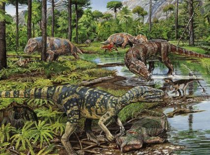
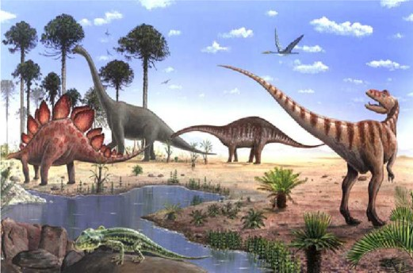

Periode

Periode Trias
Periode Trias adalah suatu periode dalam skala waktu geologi yang berlangsung antara 251 ± 0,4 hingga 199,6 ± 0,6 juta tahun yang lalu Selengkapnya.

Periode Jura
Periode Jura adalah suatu periode utama dalam skala waktu geologi yang berlangsung antara 201,3 juta tahun hingga 66 juta tahun yang lalu, setelah periode Trias dan mendahului periode Kapur Selengkapnya.

Periode Kapur
Periode Kapur atau Cretaceous adalah salah satu periode pada skala waktu geologi yang bermula pada akhir periode Jura dan berlangsung hingga awal Paleosen atau sekitar 145.5 ± 4.0 hingga 65.5 ± 0.3 juta tahun yang lalu Selengkapnya.